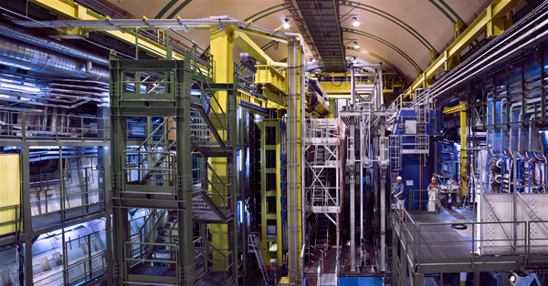
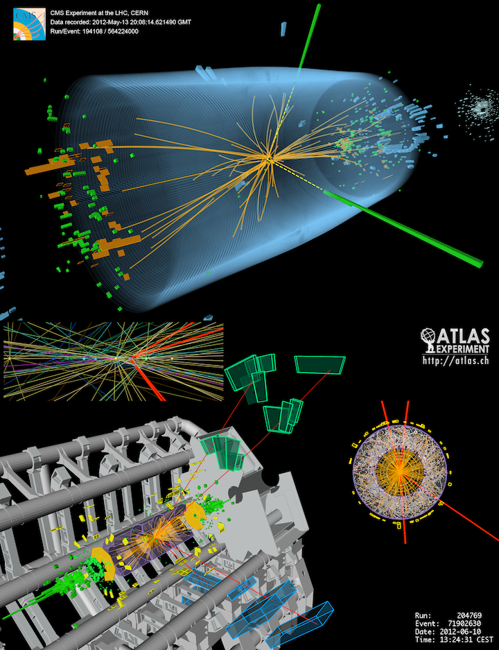

Executive Summary
AI is already at the center of physics. CERN's LHCb experiment hands much of its trigger decision (which collisions to keep, which to throw away) to machine learning, and DeepMind's GNoME predicted millions of new material candidates overnight. So the remaining problem is not speed but grading. In an age when AI pours out "discoveries," what must a result pass before we accept it as one? That is the question three physicists (Grosso, Mikuni, and Heinrich) pose in arXiv:2607.10039. This piece reads their answer not in the language of physics but in the language of verification.
The authors are blunt. AI cannot route around three fundamental limits: inductive bias, sample complexity, and experimental constraint. And so the physicist's role must shift from "AI user" to "AI evaluator." Their case compresses into a single number. Of the 2.2 million stable structures GNoME predicted, only about 736 have so far been independently verified by experiment, roughly 0.03%. Yet that figure should not be read as failure. GNoME's team counters that verification is slow because experimental chemistry is slow, while critics argue that many candidates are trivial variants of known structures. The very existence of that dispute shows how hard it is to grade an AI discovery.
For Pebblous readers, this paper is a higher-order version of a familiar idea. Where data readiness asks "is this data something AI can learn from," this paper asks for discovery readiness: "is there a verification system that can promote an AI's output into a conclusion?" Of the three limits, sample complexity and experimental constraint are, at bottom, questions about the representativeness, scarcity, and measurement limits of training data. That is precisely the logic that extends DataClinic's quality gate into a verification gate. With the EU AI Act's verification obligations for high-risk systems now in force, designing the gate for "can we trust this result" is no longer a problem for physics alone.
Editor's Note. Anything that measures the boundary between data and AI draws Pebblous in. When that boundary concerns trust in fundamental-science discovery, all the more so. This is not a physics explainer. Physics is simply the case where the limits of AI verification show most sharply; the real subject is translating that verification methodology into the language of data practice. If our August 1 piece, "Doing Science with Tools You Cannot Reproduce," asked about the opacity of the tools, this piece takes up the next question: the design of verification. It closes our Natural Science × AI Verification series.
Key Numbers
Four numbers frame this piece. Each one exposes the gap between "how much AI generated" and "how much has actually been verified."
2.2M → 736
Predicted vs. verified materials
GNoME predicted 2.2M; ~736 independently verified (≈0.03%)
99%+
LHC collision data discarded
Humans design the trigger that decides what to see = experimental constraint
1 vs. 1 billion
Two poles of sample density
Dark matter < 1 event per ton·year ↔ LHC ~1 billion collisions per second
5.0σ
Physics' discovery threshold
p≈2.9×10⁻⁷, about 1 in 3.5 million — verification culture, quantified
AI Has Started Making Discoveries — Where the Question Changed
"Should we use AI in science?" is a settled debate. At the frontier of physics, AI is not a tool but part of the decision-making itself. In the LHCb experiment, much of the trigger system that decides which of the tens of millions of particle collisions per second to store and which to discard (that is, what to "see") runs on machine learning. As the physicist Mike Williams puts it, machine learning has already spread through every corner of the particle-physics experimental pipeline. Generative models are replacing detector simulation at thousands to tens of thousands of times the speed of traditional methods. The open question is not "should we use AI" but "who grades what AI produces, and by what standard?"

Materials science is where this shift looks most dramatic. DeepMind's GNoME predicted 2.2 million stable crystal structures overnight (Merchant et al., Nature 2023). That is centuries of accumulated human chemistry compressed into a single day. Yet of those 2.2 million, only about 736 have so far been synthesized and independently verified by other labs, barely 0.03% of the total. Prediction pours out at the speed of generation; verification crawls at the speed of experiment. That gap, three and four orders of magnitude wide, is the starting point of this entire piece.
But reading that 0.03% straight off as "AI's failure" is premature. GNoME's researchers counter that the verification rate is low because experimental chemistry is slow, not because the model is flawed. Conversely, materials scientists like Anthony Cheetham of Cambridge and Ram Seshadri of UC Santa Barbara argue that many of the predicted structures are trivial variants of already-known materials, so the true novelty is overstated (as reported by 404 Media). Whichever side is right, the mere existence of this dispute is the point. Grading an AI's output as a "discovery" is inherently hard, contested, and still without agreed-upon rules.
Our August 1 piece, "Doing Science with Tools You Cannot Reproduce," asked about the opacity of the tools: is it acceptable to do science with AI we use without understanding how it works? This piece asks the next question: the design of verification. What must an AI-produced result pass before we accept it as a discovery? Grosso, Mikuni, and Heinrich argue that those passing conditions cannot be set arbitrarily. There are three limits AI cannot structurally route around, and the verification gate must be built directly on top of them.
Three Nails — Limits AI Cannot Route Around
To decide where to place the verification gate, you first have to know where the lines are that AI can never cross. Grosso et al. (2026) drive in three such nails. What matters is that all three are structural limits, not erased by "bigger models, more data, more compute." Because scale does not solve them, they are also exactly the places where human judgment must enter.
2.1Inductive Bias — There Is No Learner That Solves Everything
The first nail comes from an old theorem in learning theory, the so-called No Free Lunch result: there is no universal learner that solves every problem equally well. A model performs well on a given problem because it carries an inductive bias (a prior about what to assume first) that fits the structure of that problem. In physics, this bias cannot be chosen arbitrarily. Principles like symmetry, conservation laws, and locality determine which bias is correct. The authors see this as where the physicist's role begins. Choosing which bias to build into a model is a matter of theoretical judgment that data cannot make on your behalf.
2.2Sample Complexity — The Information Limit of a Finite Observer
The second nail is the cost of accessing information. An observer with finite resources cannot obtain as much data as it wants, and some signals are fundamentally scarce. Physics displays both poles of this limit. At one end sits direct dark-matter detection, where events are so rare that running a one-ton detector for a full year yields fewer than one expected signal. At the other end sits the LHC, where roughly a billion proton collisions occur every second. In neither regime, whether extreme scarcity or extreme abundance, does "just collect more samples" work. On the scarce side you physically cannot gather more; on the abundant side the problem becomes what to throw away.
▲ The two faces of sample complexity — in regimes of extreme data scarcity and extreme data abundance alike, simply "more data" is not the answer.
2.3Experimental Constraint — Discarded Information Cannot Be Recovered
The third nail is the most operational. A detector cannot hold every piece of information in the world. The LHC discards more than 99% of its collision data in real time, without even storing it. What to keep and what to throw away is decided by the trigger system, and designing that trigger is ultimately a human prior about "what counts as interesting physics." From this follows a decisive implication: once information is discarded, no AI, however sophisticated, can recover it. What the model learns is only data humans have already selected. Even when AI makes a "discovery," that discovery is possible only within the window the detector was designed to see in the first place.
All three nails point the same way. Which bias to build in, what to take as a sample, what to store: these decisions are human judgments that sit upstream of the data, and scale does not replace them. If so, then the more AI automates discovery, the human role does not vanish but moves upward: away from generation and into verification. That is the argument of the next section.
The Physicist's New Role — From User to Evaluator
When AI automatically pours out discovery candidates, the bottleneck moves from generation to verification. Judging what is a genuine discovery (designing the experiment, ruling on statistical significance, checking consistency with physical law) remains the human's work. Grosso et al. (2026) compress this shift into a single line: the physicist's judgments "encode scientific rigor into AI systems." Verification, in other words, is not a stamp applied afterward from outside the model but a structure in which human judgment enters at every design stage of the pipeline.
To systematize that judgment, the authors propose a verification framework called VERaiPHY (Validation & Evaluation for Robust AI in PHYsics). Where ordinary machine-learning validation leans on a single metric like accuracy or loss, VERaiPHY looks at several mutually complementary domains at once: the reliability of generative models, simulation-based inference, uncertainty quantification, interpretability, and above all the ability to detect "unknown unknowns," the unexpected signals a model encounters outside its training distribution. To these it adds physics-specific axes: symmetry and representation learning, and model-agnostic signal search that presumes no particular model. The paper does not nail down specific thresholds or passing scores. Instead it lays out the principle that these domains must operate as complements to one another.
▲ VERaiPHY is not a single score but a bundle of complementary domains. The final call — synthesizing each domain's result to decide whether to "promote to discovery" — stays with the human. (A conceptual reconstruction of the paper's structure.)
Here physics holds a special asset. The field already has the world's most rigorous verification culture built into its institutions. Before declaring a new particle or phenomenon a "discovery," physics demands the five-sigma (5.0σ) standard: the probability that the observed signal is a fluke must be below about 1 in 3.5 million (p≈2.9×10⁻⁷). The 2012 Higgs boson discovery, officially recognized only after clearing this threshold, is the canonical example. Its attitude toward reproduction differs too. In one Nature survey, physicists and engineers reported some of the highest reproducibility awareness among all surveyed fields. For other industries now forced to build AI verification from scratch, the most mature model to consult is right here.

The authors argue the framework is not confined to particle physics. Astrophysics must handle rare cosmic events; cosmology must handle the unobservable parameters of the early universe; and in each domain the three limits wear a different face. The common thread is one: AI can propose candidates, but a human evaluator must always stand at the final gate that promotes them into conclusions.
From Data Readiness to Discovery Readiness
The story so far has been physics'. But translate the three limits from physical terms into data terms and they become, immediately, the data practitioner's problem. Sample complexity is the question "does the training data adequately represent its target." Experimental constraint is the question "what was discarded during measurement and collection, and are we mistaking the model as having recovered that loss." Inductive bias is the question "which assumptions did a human, not the data, put in." This is the move from data readiness to discovery readiness.
The difference between the two lies in where the question sits. Data readiness looks before training: "is this data something AI can learn from." Discovery readiness looks all the way after the output: "is there a verification system that can promote an AI's output into a conclusion." Discovery readiness does not discard data readiness; it stacks one more layer, verification, on top of it. The table below back-translates the paper's three limits into data requirements and verification gates. It reads as a draft discovery-readiness checklist that transfers, unchanged, to any domain beyond physics.
| AI's fundamental limit | Data requirement | Verification gate (discovery readiness) |
|---|---|---|
| Inductive bias no universal learner |
Explicitly document which assumptions (symmetries, constraints, priors) went into the model | Can you answer "which bias produced this result?" — traceability of assumptions |
| Sample complexity a finite observer's information limit |
Measure the representativeness and scarcity of training data; make the extrapolation range explicit | Is the model extrapolating confidently in regions where samples are scarce? — quantification of uncertainty |
| Experimental constraint discarded information is unrecoverable |
Record the provenance of what information was lost during collection and measurement | Is the model claiming to have recovered something that was never observed in the first place? — verification of the measurement boundary |
There is a reason this table will not feel unfamiliar to Pebblous. The two left columns (representativeness, scarcity, measurement loss, provenance) are already items DataClinic examines when it diagnoses data quality. Discovery readiness can be seen as the higher-order framework that pushes that quality gate up into output verification. The cost of data to organizations is already quantified: Gartner has estimated that poor-quality data causes an average annual loss of roughly $12.9 million per organization, and various surveys find that data scientists spend anywhere from half to as much as 80% of their time on data preparation before any analysis (the figure varies widely by how it is counted). The cost of promoting an output to a conclusion without verification is added on top of that.
The physical verification of world models we covered on July 11, which asks "is the generated video physically correct" (PebbloSim / verifying the physical validity of synthetic data), is the physics version of discovery readiness. Confirming that synthetic data does not violate physical law, and confirming that an AI-predicted new material is actually synthesizable, are the same kind of gate. Both ask "what must a generated thing pass before we promote it into something trustworthy?"
Verifying the Verifier — Limits of the Evaluator Model and the Questions That Remain
The "physicist-as-evaluator" model is appealing, but it summons three objections of its own. First, the evaluator's bias. Human verification is no guarantee of objective judgment. The very preference for what counts as an interesting discovery is itself another inductive bias. Second, scalability. The volume of candidates AI generates has begun to overwhelm human capacity to verify. The soon-to-operate Vera C. Rubin Observatory is expected to pour out on the order of 10 million transient astronomical alerts every night, a scale no person-by-person verification can absorb. Third, and most fundamental, the infinite regress: who verifies the verifier?

That this regress is not empty philosophy is proven by the current state of verification infrastructure. The very benchmarks that evaluate AI models are contaminated. Data contamination (evaluation problems leaking into training data) varies widely by target, but some multilingual benchmarks have been reported as high as 91.8%, and substantial contamination has been confirmed even in the widely used MMLU. SWE-bench, long the standard for evaluating coding ability, retired a large share of its verified subtasks after they were found to rest on flawed tests. Across academia, paper retractions have passed 10,000 a year, and cases of AI-fabricated fake citations slipping into papers are rising. The tools that do the verifying are already overloaded.
▲ Because the quantities differ in kind (rates vs. counts), the bar lengths give a sense of scale rather than a strict comparison. Each figure varies widely by target and should be read with its context.
The paper does not offer a finished answer to this regress either. But there is a practical direction. Rather than entrusting verification to a single judge, distribute it across several layers (automated metrics, human judgment, independent reproduction, external experiment) and quantify how far each layer is confident. Automated verification handles scale; human judgment catches the unknown unknowns that automation misses. There is no perfect judge, but stack judges with different failure modes and one layer covers another's blind spot. Discovery readiness is, in the end, a question of how to design this multi-layer gate.
The Natural Science × AI Verification series has carried three questions in sequence. March's "Taste" asked about the judgment AI lacks; August 1's "Tools You Cannot Reproduce" asked about the opacity of the tools; and this piece asked about the design of verification. The three converge on one answer: whatever AI does, the final judgment that turns it into a trustworthy conclusion remains the human's to make. With the EU AI Act's verification obligations for high-risk systems now in force (2026-08-02), that judgment is shifting from "recommended" to "required." The problem physics met first is soon the problem of every organization that puts AI to work in its decisions.
References
Academic (primary · core)
- 1.Grosso, G., Mikuni, V., & Heinrich, L. (2026). Are We Ready for AI-Driven Discovery? AI Verification Before the Next Fundamental Physics Breakthrough. arXiv:2607.10039. arxiv.org/abs/2607.10039
- 2.Merchant, A. et al. (2023). Scaling deep learning for materials discovery (GNoME). Nature 624, 80–85. nature.com
- 3.Baker, M. (2016). 1,500 scientists lift the lid on reproducibility. Nature 533, 452–454. nature.com/articles/533452a
Policy · Statistics · Industry
- 4.Williams, M. / Symmetry Magazine. Machine learning proliferates in particle physics — machine learning in the LHCb trigger. symmetrymagazine.org
- 5.ScienceAlert. Over 99% of LHC particle collision data is lost. sciencealert.com
- 6.Vera C. Rubin Observatory / LSST — wide-field time-domain survey; large-scale nightly transient alerts. rubinobservatory.org
- 7.Gartner (2020). Data Quality Market Survey — estimated annual cost of poor-quality data per organization.
- 8.Cheetham, A. K., & Seshadri, R. (2024). Critique of the structural novelty of GNoME (as reported by 404 Media).
- 9.European Union. AI Act (Regulation (EU) 2024/1689) — verification obligations for high-risk AI systems (in force 2026-08-02). eur-lex.europa.eu
Pebblous-adjacent (series)
- 10.Pebblous (2026-08-01). Doing Science with Tools You Cannot Reproduce. blog.pebblous.ai — the direct predecessor.
- 11.Pebblous (2026-06-21). AI Doesn't Change the Answer — It Changes the Question. blog.pebblous.ai — the three-stage discovery frame.